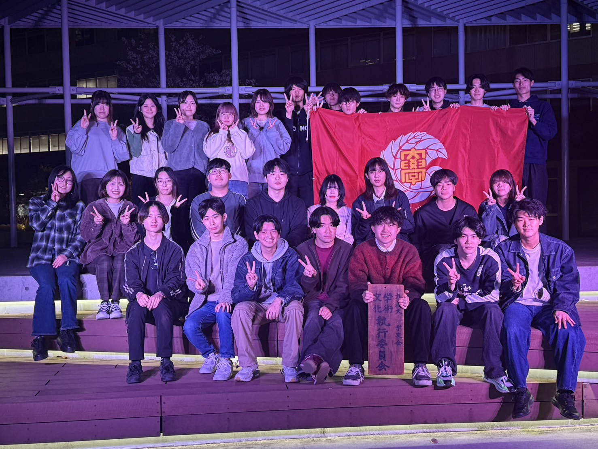

📢 開催概要
今年のテーマは「飛 燕」です。
学生たちの熱意と創造性が溢れる4日間です。皆様のご来場をお待ちしております！
- 【日程】
- 2026年5月21日(木)〜24日(日)
- 【会場】
- 九州産業大学
- 【入場料】
- 無料（どなたでもご入場いただけます）
🖼️ 原画担当者様紹介
👤 名前：立花 美鈴
🖊️ 所属サークル：デジタルアート部
🤝 学術文化執行委員会

📍 場所：学友会棟 中央棟 2階 部室
🕑 時間：月・水・金 18：00〜20：00
👥 人数：41名
💬 私たち学術文化執行委員会は、主に5月に開催される「学文祭」の企画・運営を行っている執行部です。
イベント部門と情宣部門に分かれて成功に向けて活動しています。
また、学術文化会に関する部・同好会が円滑に活動できるよう、活動支援も行っております。
やりがいを感じたい人、少しでも興味がある人は部室まで気軽にお越しください！
🗣️ 委員長挨拶
皆さんこんにちは！学術文化執行委員会委員長の網田直輝です。
今年の学文祭も、それぞれの団体が想いを込めて準備を重ねてまいりました。
学文祭は、単なる発表の場ではなく、学生同士、そしてご来場の皆さまとがつながる機会でもあります。学文祭を通して、新たな発見が生まれ、文化の輪が広がっていくことを願っております。
開催にあたり、ご支援・ご協力を賜りました皆さまに心からの感謝を申し上げます。
最後までお楽しみください！